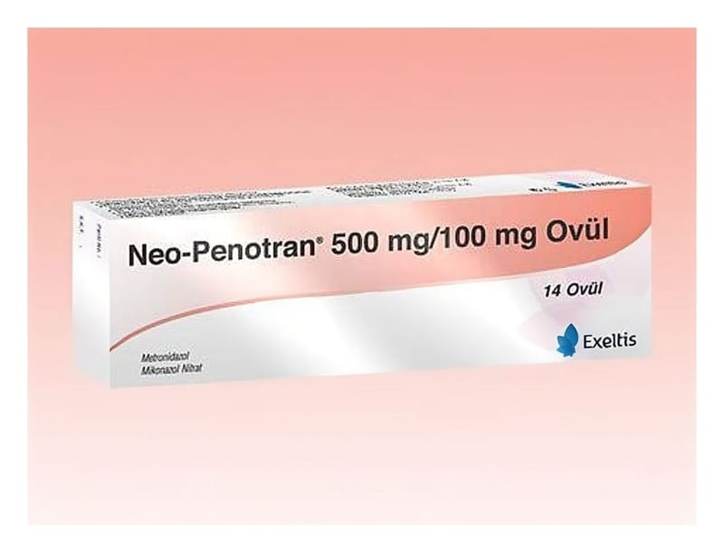

Neo-Penotran 500 mg/ 100 mg Ovül, 14 Adet

Ne için kullanılır
KT · Bölüm 1● NEO-PENOTRAN®, vajina içine (hazneye) yerleştirilmek suretiyle uygulanan ovül formunda bir üründür. Antibakteriyel (bakterilere karşı etkili), antifungaller (mantarlara karşı etkili) olarak adlandırılan ilaç grubuna dahildir. ● Beyazımsı krem renkli her bir ovül etkin madde olarak 500 mg metronidazol ve 100 mg mikonazol nitrat içermektedir. NEO-PENOTRAN®, 14 adet ovül içeren ambalajda kullanıma sunulmaktadır. ● NEO-PENOTRAN®, vajinada (haznede) kaşıntı, yanma, anormal akıntı, şişme ve kızarma gibi belirtilerle seyreden vajina iltihabının (vajinit) tedavisinde kullanılır.
- 2 -
2. NEO-PENOTRAN®’ı kullanmadan önce dikkat edilmesi gerekenler NEO- PENOTRAN®’ı aşağıdaki durumlarda KULLANMAYINIZ Eğer;
● NEO-PENOTRAN®’ın içeriğinde bulunan etkin maddelerin herhangi birine veya bunların türevlerine karşı alerjiniz var ise, ● Hamileliğinizin ilk 3 aylık döneminde iseniz, ● Porfiri hastalığınız (kan sistemi ile ilgili kalıtsal metabolik bir bozukluk) var ise, ● Epilepsi (sara) hastası iseniz, ● Ciddi karaciğer fonksiyon bozukluğunuz var ise NEO-PENOTRAN®’ı kullanmayınız.
NEO-PENOTRAN®tedavisi esnasında ve tedavi bittikten 48 saat sonrasına kadar alkol kullanılmamalıdır.
NEO-PENOTRAN®tedavisi esnasında veya tedaviden sonra 2 hafta boyunca alkol bağımlılığı tedavisinde kullanılan ve etkin madde olarak disülfiram isimli maddeyi içeren ilaçlar kullanılmamalıdır.
NEO-PENOTRAN®’ı aşağıdaki durumlarda DİKKATLİ KULLANINIZ
● NEO-PENOTRAN®latekste hasar yapabilir. Bu nedenle ovüllerin lateks içeren doğum kontrolü amacıyla kullanılan diyafram ve prezervatifle temas etmemelidir. ● Aksi takdirde istenmeyen gebelikler meydana gelebilir. ● Bazı durumlarda, eşinizin de ağızdan alınan uygun bir ilaçla tedavi edilmesi gerekebilir. Doktorunuz tarafından böyle bir durum tespit edildiği takdirde size ve eşinize verilen tedaviye harfiyen uyunuz. ● Doktorunuz tarafından önerilen dozdan daha yüksek dozlarda ve uzun süreli kullanıldığında el ve ayaklarda güçsüzlük, ağrı, uyuşma, karıncalanma hissi (periferik nöropati belirtileri) ve epilepsi (sara) nöbetine benzer nöbetler (konvülsiyon) meydana gelebilir. Böyle bir durumda ilacı kullanmayı durdurunuz ve doktorunuza veya bir hastaneye başvurunuz. ● Karaciğer hastalığınız varsa ya da daha önce bu tür bir hastalık geçirmiş iseniz, ● Böbrek yetmezliği nedeniyle diyaliz alıyorsanız, ● Sinir sisteminiz ile ilgili bir hastalığınız varsa, ● Tedavi sırasında alkollü içkilerden kaçınmak gerekir. Tedaviden sonra da 48 saat alkol almamalısınız. ● Tıbbi geçmişinizde kan ile ilgili genetik bir hastalığınız varsa metronidazol dikkatli kullanılmalıdır. ● NEO-PENOTRAN®tedavisi esnasında diğer vajinal ürünleri (örneğin tampon, duş ve sperm öldürücü (spermisid) etkili ürünler) kullanmayınız.
NEO-PENOTRAN®cinsel olgunluğa erişmemiş kız çocuklarında ve bakirelerde kullanılmamalıdır.
- 3 -
Mikonazol nitrat ve diğer mikonazol topikal formlarıyla tedavi sırasında ani başlayan ve hayatı tehdit eden alerjik reaksiyon (anafilaksi) ve bazen yüzde ve boğazda meydana gelen, nefes alıp vermeyi zorlaştıran şişlik (anjiyoödem) dahil olmak üzere ciddi aşırı duyarlılık reaksiyonları oluşabilir. Aşırı duyarlılık veya tahriş belirtileri ortaya çıkarsa, tedavi kesilmeli ve derhal bir doktor ile iletişime geçilmelidir.
Cockayne sendromlu (büyüme gelişme geriliği ve sinir sistemi bozuklukları ile karakterize genetik bir hastalık) hastalarda ölümcül sonucu olan olgular da dahil olmak üzere ciddi karaciğer toksisitesi (karaciğer zehirlenmesi) / akut karaciğer yetmezliği vakaları metronidazol içeren ürün ile bildirilmiştir. Cockayne sendromundan etkilenirseniz, ayrıca metronidazolle tedavi edilirken ve sonrasında karaciğer fonksiyonunuz doktorunuz tarafından sık sık izlemelidir.
Metronidazol ile, Stevens Johnson sendromu (SJS) (deride ağrılı şişlik ve kızarıklık ile deride soyulma), toksik epidermal nekroliz (TEN) (deride kabarma ve dökülme ile görülen bozukluk) veya akut jeneralize eksantematöz püstüloz (AGEP) (ani başlangıçlı, yaygın ve deride çok sayıda iltihaplı kabarcıklarla seyreden bir hastalıktır) gibi ciddi büllöz deri reaksiyonları vakaları bildirilmiştir. SJS, TEN veya AGEP semptomları veya belirtileri varsa, NEO-PENOTRAN®tedavisi derhal kesilmelidir.
Bazı kan testleri ile etkileşime girerek yanlış sonuçlara sebep olabilir.
İlacın kullanımı sırasında idrarınızın renginde koyulaşma olabilir.
Bu uyarılar, geçmişteki herhangi bir dönemde dahi olsa sizin için geçerliyse lütfen doktorunuza danışınız.
NEO-PENOTRAN®’ın yiyecek ve içecek ile kullanılması NEO-PENOTRAN®’ın uygulama yolu itibariyle yiyecek ve içeceklerle etkileşimi yoktur.
Hamilelik İlacı kullanmadan önce doktorunuza veya eczacınıza danışınız.
NEO-PENOTRAN®gebeliğin ilk üç ayında kullanılmamalıdır.
Hamile olmanız durumunda NEO-PENOTRAN®’ı kullanıp kullanamayacağınıza ancak doktorunuz karar verebilir.
Tedaviniz sırasında hamile olduğunuzu fark ederseniz hemen doktorunuza veya eczacınıza danışınız.
Emzirme İlacı kullanmadan önce doktorunuza veya eczacınıza danışınız.
NEO-PENOTRAN®’ın etkin maddelerinden biri olan metronidazol anne sütüne geçmektedir. Bu
- 4 -
nedenle tedavi esnasında bebek sütten kesilmeli, tedavi bittikten 24 – 48 saat sonra emzirmeye devam edilmelidir.
Araç ve makine kullanımı Doktorunuz tarafından tavsiye edilen dozda ve sürede kullanıldığı müddetçe NEO- PENOTRAN®’ın araç ve makine kullanma yeteneğiniz üzerinde bilinen bir etkisi yoktur. Ancak NEO-PENOTRAN®kullanımı sırasında baş dönmesi, yorgunluk, halsizlik gibi yan etkiler hissederseniz, motorlu araç ve makine kullanmayınız. NEO-PENOTRAN®’ın içeriğinde bulunan bazı yardımcı maddeler hakkında önemli bilgiler NEO-PENOTRAN®’ın içeriğinde özel uyarı gerektiren herhangi bir yardımcı madde bulunmamaktadır.
Diğer ilaçlar ile birlikte kullanımı Özellikle alkol veya aşağıda belirtilen ilaçlardan herhangi birini kullanıyorsanız doktorunuzu veya eczacınızı mutlaka bilgilendiriniz.
● Kolesterol yüksekliği tedavisinde kullanılan ve etkin madde olarak simvastatin veya lovastatin maddelerini içeren ilaçlar ● Kan basıncı yüksekliği tedavisinde kullanılan ve etkin madde olarak dihidropiridin grubu veya verapamil maddelerini içeren ilaçlar ● Kanın pıhtılaşmasını engelleyen ilaçlar (örneğin: etkin madde olarak asenokumarol, anisindion, dikumarol, fenindion, fenprokumon ve varfarin içeren ilaçlar) ● Mide ve on iki parmak bağırsağı ülserlerinin tedavisinde kullanılan ve etkin madde olarak simetidin ve sisaprid isimli maddeleri içeren ilaçlar ● Alerjik hastalıkların tedavisinde kullanılan ilaçlar (örneğin; etkin madde olarak astemizol ve terfenadin içeren ilaçlar) ● Bağışıklık sistemini baskılayan ve etkin madde olarak siklosporin isimli maddeyi içeren ilaçlar ● Kas gevşetici olarak kullanılan verükonyum ● Şeker (diyabet) hastalığının tedavisinde kullanılan ve etkin madde olarak glimeprid isimli maddeyi içeren ilaçlar ● Kan yağlarının düzeyinin azaltılması için kullanılan kolestiramin ● Migren türü baş ağrısı, ameliyat sonrası rahim içi kanamalarının azaltılması için kullanılan ergo alkaloidleri ● İdrar kaçırma, sık idrara çıkma ve idrar sızması gibi problemlerin tedavisinde kullanılan ilaçlar (örneğin; etkin madde olarak oksibutinin ve tolterodin içeren ilaçlar) ● Ruhsal bozukluk tedavisinde kullanılan ve etkin madde olarak pimozid isimli maddeyi içeren ilaçlar ● Alkol bağımlılığı tedavisinde kullanılan ve etkin madde olarak disülfiram isimli maddeyi içeren ilaçlar ● Kanser tedavisinde kullanılan ilaçlar (örneğin; etkin madde olarak fluorourasil, trimetreksat, busulfan içeren ilaçlar) ● Epilepsi (sara) tedavisinde kullanılan ilaçlar (örneğin; etkin madde olarak karbamazepin,
- 5 -
fosfenitoin, fenobarbital ve fenitoin içeren ilaçlar) ● Duygulanım bozukluğu tedavisinde kullanılan ve etkin madde olarak lityum isimli maddeyi içeren ilaçlar ● Uyuşturucu ilaç niteliğinde olan ve özellikle kanser hastalarında görülen çok şiddetli ağrıların giderilmesinde ağrı kesici olarak kullanılan oksikodon ve fentanil isimli etkin maddeleri içeren ilaçlar ● Astım tedavisinde kullanılan ve etkin madde olarak teofilin isimli maddeyi içeren ilaçlar ● Kalp ritim bozukluklarının tedavisinde kullanılan ve etkin madde olarak amiodaron ve prokainamid isimli maddeleri içeren ilaçlar
Eğer reçeteli ya da reçetesiz herhangi bir ilacı şu anda kullanıyorsanız veya son zamanlarda kullandınız ise lütfen doktorunuza veya eczacınıza bunlar hakkında bilgi veriniz.